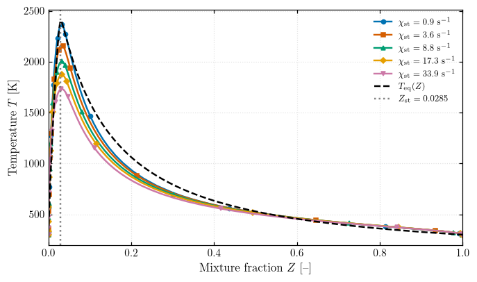
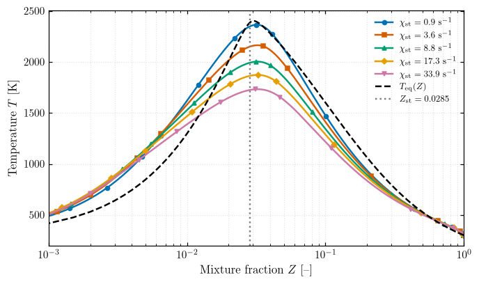
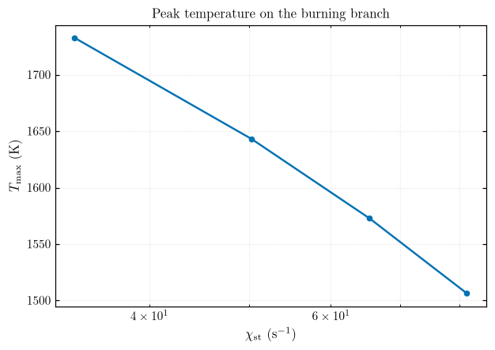

Part 2 — Non-Premixed Flames: \(T(Z)\) at Increasing Scalar Dissipation Rate¶
H\(_2\)/air counterflow diffusion flames (h2o2.yaml, 300 K streams, 1 atm, 2 cm gap), compared with the equilibrium envelope \(T_\mathrm{eq}(Z)\).
Functions live in src/ct_utils/opposed_premixed_flame (flames) and src/ct_utils/plots. Tables go to results/part2/raw/, figures to results/part2/figures/{pdf,jpeg}/.
import sys
from pathlib import Path
sys.path.insert(0, str(Path.cwd().parent / "src"))
import matplotlib.pyplot as plt
import numpy as np
import pandas as pd
import ct_utils
from ct_utils import general as eq
from ct_utils import opposed_premixed_flame as cf
from ct_utils import plots
ct_utils.set_part("part2") # outputs go to results/part2/
plots.set_style()
Step 1 — Family of counterflow flames¶
cf.solve_counterflow(strain_rate, mechanism, fuel, T_fuel, T_ox, p, width) solves one flame. Both inlets get \(\dot m = a\,\tfrac{L}{2}\,\tfrac{\rho_f + \rho_{ox}}{2}\); the grid is refined with ratio=3, slope=0.05, curve=0.1.
cf.flame_to_dataframe(flame) exports the profiles with to_pandas() plus \(x\), \(u\), \(Z\), \(\chi\); saved with eq.save_dataframe.
strain_rates = [50, 200, 500, 1000, 2000] # 1/s
flames = {a: cf.solve_counterflow(a) for a in strain_rates}
for a, flame in flames.items():
eq.save_dataframe(cf.flame_to_dataframe(flame), f"flame_a{a}")
print({a: f"{f.T.max():.0f} K" for a, f in flames.items()})
{50: '2365 K', 200: '2164 K', 500: '2003 K', 1000: '1873 K', 2000: '1733 K'}
Step 2 — \(T(Z)\) and \(\chi_\mathrm{st}\)¶
cf.extract_TZ_profile(flame, fuel, oxidizer) returns \(Z\) (Bilger), \(T\) and \(\chi_\mathrm{st}\), read at the grid point closest to \(Z_\mathrm{st}\). Helpers: cf.stoichiometric_mixture_fraction() gives \(Z_\mathrm{st}\), cf.scalar_dissipation_rate(flame) gives \(\chi(x)\), and cf.chi_st_analytic(a, Z_st) gives the constant-density estimate for comparison.
| Symbol | Meaning | SI unit |
|---|---|---|
| \(\chi\), \(\chi_\mathrm{st}\) | Scalar dissipation rate (at \(Z_\mathrm{st}\)) | 1/s |
| \(D\) | Mixture diffusivity (unity Lewis number) | m²/s |
| \(k\), \(\rho\), \(c_p\) | Conductivity, density, specific heat | W/(m·K), kg/m³, J/(kg·K) |
| \(Z\), \(Z_\mathrm{st}\) | Mixture fraction, stoichiometric value | – |
| \(a\) | Strain rate | 1/s |
Z_st = cf.stoichiometric_mixture_fraction()
profiles = {a: cf.extract_TZ_profile(f) for a, f in flames.items()}
summary = pd.DataFrame({
"a (1/s)": strain_rates,
"a_max measured (1/s)": [flames[a].strain_rate("max") for a in strain_rates],
"chi_st (1/s)": [profiles[a][2] for a in strain_rates],
"chi_st analytic (1/s)": cf.chi_st_analytic(strain_rates, Z_st),
"T_max (K)": [profiles[a][1].max() for a in strain_rates],
"Z at T_max": [profiles[a][0][np.argmax(profiles[a][1])] for a in strain_rates],
})
eq.save_dataframe(summary, "summary")
print(f"Z_st = {Z_st:.4f}\n")
print(summary.to_string(index=False, float_format="%.4g"))
Z_st = 0.0285
a (1/s) a_max measured (1/s) chi_st (1/s) chi_st analytic (1/s) T_max (K) Z at T_max
50 827 0.9155 0.4257 2365 0.0317
200 2829 3.559 1.703 2164 0.03214
500 6223 8.787 4.257 2003 0.03219
1000 1.159e+04 17.33 8.514 1873 0.03218
2000 2.308e+04 33.87 17.03 1733 0.03238
Step 3 — Equilibrium envelope¶
cf.equilibrium_T_of_Z(Z_range, ...) blends the streams by mass at each \(Z\), blends the enthalpy the same way (\(h = Z h_f + (1-Z) h_{ox}\)), and equilibrates at constant \(h\), \(p\).
Z_eq = np.concatenate([np.linspace(0, 0.1, 201), np.linspace(0.1, 1, 181)[1:]])
T_eq = cf.equilibrium_T_of_Z(Z_eq)
eq.save_dataframe(pd.DataFrame({"Z": Z_eq, "T_eq": T_eq}), "T_eq_of_Z")
print(f"T_eq max = {T_eq.max():.0f} K at Z = {Z_eq[np.argmax(T_eq)]:.4f}")
T_eq max = 2402 K at Z = 0.0305
Step 4 — Family plot¶
Left: the requested figure (\(Z \in [0, 1]\)). Right: the same on a log \(Z\) axis, where the reaction zone near \(Z_\mathrm{st}\) is visible.
labels = [rf"$\chi_\mathrm{{st}} = {profiles[a][2]:.1f}$ s$^{{-1}}$" for a in strain_rates]
Zs = [profiles[a][0] for a in strain_rates]
Ts = [profiles[a][1] for a in strain_rates]
for xscale, xlim, name in [("linear", (0, 1), "part2_T_vs_Z"), ("log", (1e-3, 1), "part2_T_vs_Z_logZ")]:
fig, ax = plt.subplots(figsize=(7, 4))
plots.plot(Zs, Ts, r"Mixture fraction $Z$ [--]", r"Temperature $T$ [K]", ax=ax,
labels=labels, xscale=xscale, markevery=15, legend=False)
ax.plot(Z_eq, T_eq, "k--", marker="none", label=r"$T_\mathrm{eq}(Z)$")
ax.axvline(Z_st, ls=":", color="0.5", marker="none", label=rf"$Z_\mathrm{{st}} = {Z_st:.4f}$")
ax.set_xlim(*xlim)
ax.legend(fontsize=8)
plots.save_figure(fig, name)
plt.show()


Extinction¶
A solution that has extinguished collapses to pure mixing: \(T_\mathrm{max}\) drops to the inlet temperature. Scanning higher strain rates locates where that happens.
a_scan = np.array([2000, 3000, 4000, 5000, 6000, 7000, 8000, 9000, 10000])
scan = []
for a in a_scan:
f = cf.solve_counterflow(a)
Z, T, chi = cf.extract_TZ_profile(f)
scan.append({"a (1/s)": a, "chi_st (1/s)": chi, "T_max (K)": T.max(), "burning": T.max() > 1000})
scan = pd.DataFrame(scan)
eq.save_dataframe(scan, "extinction_scan")
print(scan.to_string(index=False, float_format="%.4g"))
a (1/s) chi_st (1/s) T_max (K) burning
2000 33.87 1733 True
3000 50.25 1643 True
4000 65.41 1573 True
5000 81.29 1506 True
6000 0.4273 300 False
7000 0.3659 300.1 False
8000 0.3192 300.9 False
9000 0.283 300.1 False
10000 0.2509 300.9 False
burn = scan[scan.burning]
fig, ax = plots.plot(burn["chi_st (1/s)"], burn["T_max (K)"], r"$\chi_\mathrm{st}$ (s$^{-1}$)",
r"$T_\mathrm{max}$ (K)", legend=False, xscale="log",
title="Peak temperature on the burning branch")
plots.save_figure(fig, "part2_Tmax_vs_chi")
plt.show()

Answers¶
1. Why is \(T_\mathrm{eq}(Z)\) asymmetric? On a linear \(Z\) axis the drop is actually steeper toward \(Z = 0\), because \(Z_\mathrm{st} = 0.0285\) is so small. Toward \(Z = 1\) it decays slowly. With complete combustion (Burke–Schumann), the temperature rise varies linearly on each side of \(Z_\mathrm{st}\):
| Symbol | Meaning | SI unit |
|---|---|---|
| \(T\) | Burned temperature | K |
| \(T_\mathrm{mix}\) | Temperature of the unburned blend at \(Z\) | K |
| \(Z\), \(Z_\mathrm{st}\) | Mixture fraction, stoichiometric value | – |
The lean branch climbs from \(Z = 0\) to \(0.0285\), so it is steep. The rich branch spreads the fixed heat release over the extra fuel mass all the way to \(Z = 1\). Heat release is limited by the fuel on the lean side and by O\(_2\) on the rich side.
2. Does the peak shift with \(\chi_\mathrm{st}\)? Slightly richer: \(Z(T_\mathrm{max})\) goes from \(0.0317\) to \(0.0324\) as \(\chi_\mathrm{st}\) goes from 0.9 to 34 s\(^{-1}\), and to \(0.0336\) just before extinction. Higher strain lets unburned H\(_2\) leak through the reaction zone. H\(_2\) diffuses fast, so the zone where heat release balances losses moves toward the fuel side.
3. The area between \(T(Z)\) and \(T_\mathrm{eq}(Z)\) is the enthalpy not yet released as heat, because of incomplete combustion and dissociation not recombining. Its size is set by the Damköhler number \(\mathrm{Da} \sim \tau_\mathrm{mix}/\tau_\mathrm{chem} \sim 1/(\chi_\mathrm{st}\,\tau_\mathrm{chem})\): higher \(\chi_\mathrm{st}\) gives less time for chemistry and a larger gap.
4. Closest to extinction: the burning branch ends between \(a = 5000\) s\(^{-1}\) (\(\chi_\mathrm{st} \approx 81\) s\(^{-1}\), \(T_\mathrm{max} \approx 1506\) K) and \(a = 6000\) s\(^{-1}\), where the solution collapses to pure mixing. Of the main five, \(\chi_\mathrm{st} = 33.9\) s\(^{-1}\) is closest. You detect it in the flame object by flame.T.max() dropping to the inlet temperature (and the heat release, flame.heat_release_rate, going to zero). This scan restarts every solve from scratch; a strain-rate continuation from the last burning solution would pin the limit more precisely.
5. Why the lowest-strain flame still differs from equilibrium: (a) \(\chi_\mathrm{st} \approx 0.9\) s\(^{-1}\) is small but not zero, so the radicals do not fully recombine; (b) mainly differential diffusion. H\(_2\) is very light (Lewis number \(\approx 0.3\)), so it diffuses ahead of heat. The element-based \(Z\) is then no longer a conserved enthalpy coordinate, and \(T\) even exceeds \(T_\mathrm{eq}\) on the lean side (\(Z < 0.02\)). The equilibrium envelope assumes equal diffusivities.
The measured \(\chi_\mathrm{st}\) is about \(2\times\) the constant-density analytic value, and the measured maximum strain is about \(15\times\) the target \(a\). Both come from the large density difference between the H\(_2\) and air jets, which the project's equal-mass-flux formula does not account for.